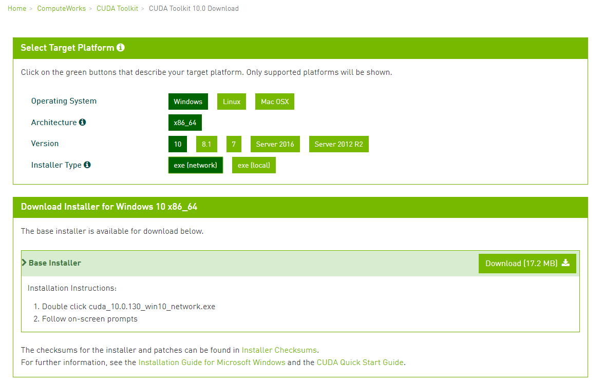
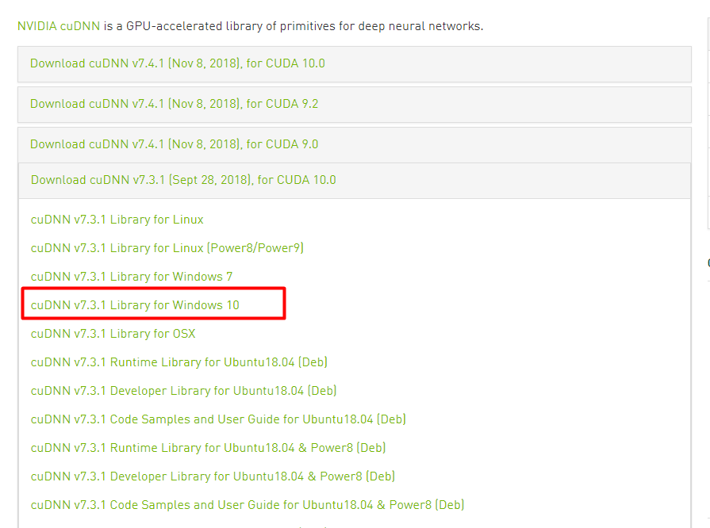
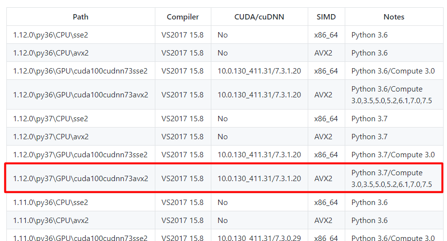
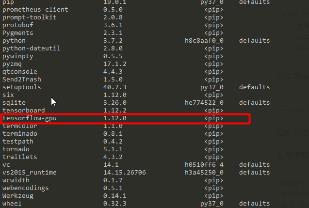
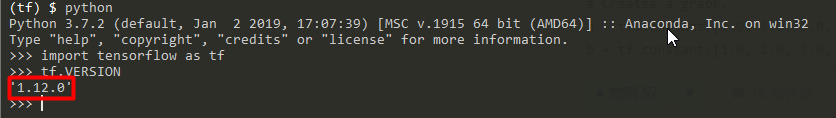
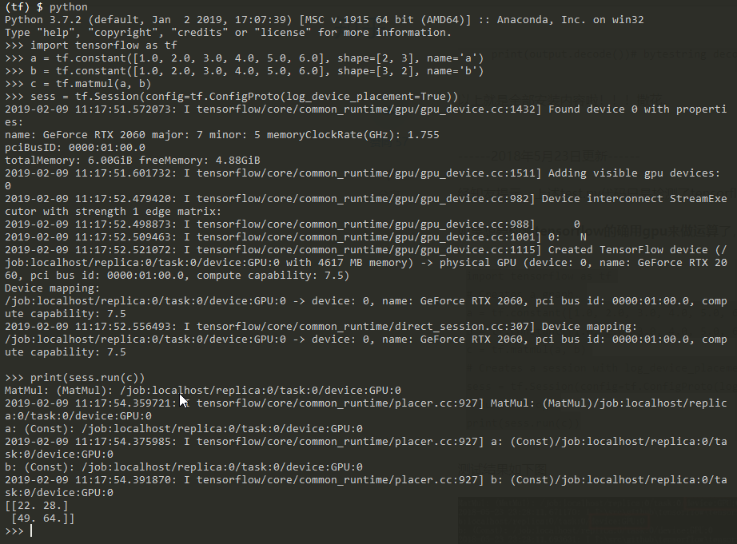

Windows10下安装GPU版TensorFlow(显卡RTX2060)过程记录
1. miniconda安装
下载地址：https://conda.io/en/latest/miniconda.html
我这里安装的是Python3.7 64-bit版
下载完成后创建一个conda环境
1 | conda create --name tf python=3 |
然后进入环境
1 | activate tf |
2.Visual Studio安装
下载地址：https://visualstudio.microsoft.com/zh-hans/
我这里下载的是Windows Community 2017版，下载完成后双击进行安装，安装C++的编译器。
3. CUDA10.0下载与安装
目前，TensorFlow官方1.12版本还不支持CUDA 10.0版本，但是万能的github上有我们所需要的，这个后面再说。
这里先安装CUDA 10.0版本。下载地址：https://developer.nvidia.com/cuda-downloads

我这里偷懒，选择的是network版本，选择local版本也是一样的，就是安装包体积大了些。
4. cuDNN7.3.1下载与安装
选择cuDNN 7.3.1版本也是按照后面选择的TensorFlow版本所要求的。
下载地址：https://developer.nvidia.com/rdp/cudnn-archive，选择[cuDNN v7.3.1 Library for Windows 10](https://developer.nvidia.com/compute/machine-learning/cudnn/secure/v7.3.1/prod/10.0_2018927/cudnn-10.0-windows10-x64-v7.3.1.20)

5.TensorFlow下载与安装
由于TensorFlow官方1.12版本还不支持cuda 10.0版本，所以还是得求助github，附github地址：https://github.com/fo40225/tensorflow-windows-wheel
我这里选择的是：1.12.0\py37\GPU\cuda100cudnn73avx2 版本，从下图中可以看到，其支持的版本是CUDA 10.0.130_411.31，cuDNN 7.3.1.20，这也是我之前在安装CUDA和cuDNN是所选择的版本。

下载完成后，进入下载文件的文件夹，进入相应的conda环境，然后使用下列命令进行安装
1 | pip install tensorflow_gpu-1.12.0-cp37-cp37m-win_amd64.whl |
使用conda list查看安装情况，看到了tensorflow-gpu说明已经安装完成。

6. TensorFlow测试

在python环境下，引入tensrflow没有问题，下面测试一下tensorflow是否能够调用GPU。
测试代码：
1 | import tensorflow as tf |

图中device:GPU:0表示调用了GPU。
安装成功~ ^_^